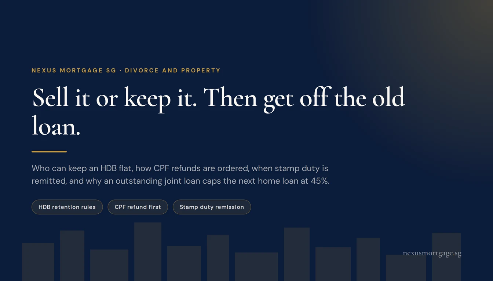
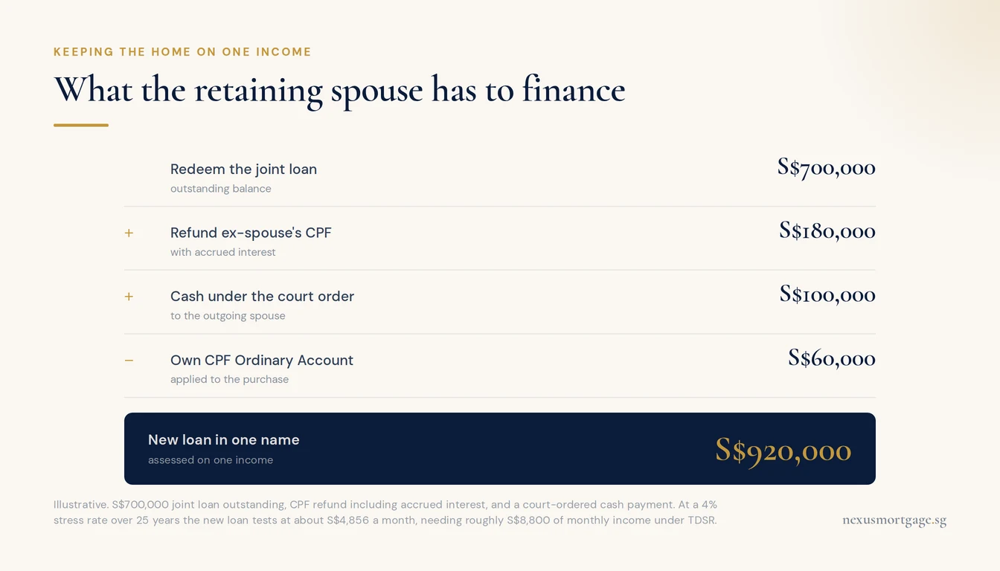
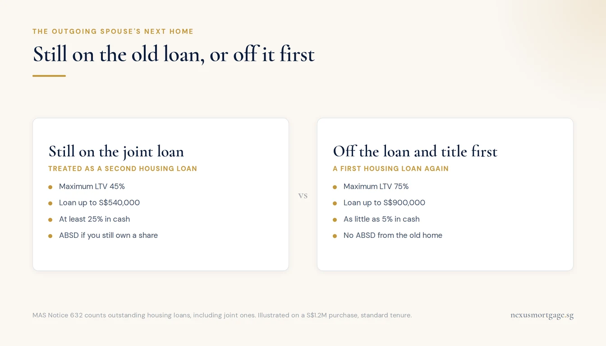

Divorce and the Home Loan: Selling, Keeping, and Getting Your Name Off the Loan

The home can be sold or kept by one of you. An HDB flat can only be sold on the open market after its five-year MOP, and only a spouse who is eligible can keep it: typically the parent with custody, or a citizen aged 35 or over under the singles scheme. Whoever keeps the home must refinance the loan onto one income, and usually refund the other spouse's CPF with accrued interest. Transfers under a divorce court order can qualify for stamp duty remission. The step people most often miss is financial: until the outgoing spouse is off the old loan, their next home loan is capped at 45% LTV, not 75%.
This article is about the money and the mortgage, which is the part of a divorce where a mortgage adviser is actually useful. It is not legal advice, and how matrimonial assets are divided is for your lawyers and the court. What we can tell you is what each outcome costs, what a bank will and will not lend, and the order of steps that avoids expensive mistakes.
Sell or Keep: The Real Choice
For most couples there are two outcomes for the home, whatever kind of property it is.
| Sell | One spouse keeps it | |
|---|---|---|
| What happens to the loan | Redeemed from the sale proceeds | Refinanced into the retaining spouse's sole name |
| CPF used by both | Refunded from proceeds, with accrued interest | Outgoing spouse's CPF refunded, fully or partly |
| Whose income matters | Neither, for this property | The retaining spouse's alone |
| Main risk | Two households need two new homes | A loan the retaining spouse cannot carry |
The official guidance on this is blunt, and it is right: if the spouse who wants to keep the home cannot service the loan alone, it is better to make other arrangements now than to fall into arrears and lose the home later. Emotion tends to favour keeping the family home. The arithmetic needs to agree before anyone commits to it.
HDB Flats: Who Can Keep It, and the MOP
An HDB flat carries two extra conditions that private property does not.
Only an eligible spouse can keep it. The court may order either party to take over the flat, but that person must meet HDB's conditions to retain it:
- With children: you can generally retain the flat if you have custody, including care and control, of a child of the marriage.
- Without children: you can have sole ownership if you are a Singapore Citizen, at least 35 years old, and meet the prevailing conditions under the Single Singapore Citizen Scheme. Alternatively, you can include another eligible person to retain the flat under an eligibility scheme.
- Not at all where the marriage was annulled or not consummated, or where a fiancé-fiancée application broke up before marriage.
The MOP decides whether you can sell. To sell on the open market, the flat must have met its five-year minimum occupation period, counted from key collection and excluding any time the whole flat was rented out. If the MOP has not been met and one of you is eligible, the flat can be transferred to that person. If neither is eligible, you may have to surrender it to HDB, which assesses whether it can be returned and what compensation is paid.
Timing. You can apply for the change of ownership once you have the Interim Judgment (or the Decree of Divorce for Muslim divorces) and have settled the ancillary matters on the flat and the children. The Final Judgment or Certificate of Divorce must be produced by the legal completion date.
Before you negotiate anything, run HDB's Housing Options Explorer through Singpass. It pulls your MOP status and CPF figures and tells you whether each of you could retain or sell, and the report it produces can be used as a supporting document in the divorce proceedings.
Private Property and ECs
Private property has no MOP and no retention eligibility test, so the choice is purely financial and legal. The retaining spouse either takes a transfer of the other's share under a court order, or buys the share at an agreed price by option or sale and purchase agreement.
Three things to watch:
- SSD on the transfer. If the property was bought recently, a transfer or sale between spouses inside the SSD holding period can attract SSD, unless the matrimonial remission applies. The retaining spouse's later sale can also attract SSD, depending on how the holding period is counted for the share they acquired. Check with IRAS before you sell.
- Foreign spouses. For landed property under the Residential Property Act, a foreign spouse, including a PR, may need approval to acquire the other's share or to sell within a non-disposal period.
- ECs sit between the two. Within the MOP they follow HDB-style rules; after it, they behave much like private property. Confirm the rules for your project before assuming either.
The CPF Refund, and Where It Goes
CPF is where most divorce settlements get the numbers wrong.
When the home is sold, the proceeds go in a fixed order: the outstanding loan, then the CPF each of you used plus accrued interest, then sale costs. Only what remains is split between you. If the home sells at or above market value and the proceeds cannot cover the full CPF refunds, you do not have to top up the shortfall in cash; the refunds are pro-rated instead. But if the court orders the proceeds divided in a way that does not follow CPF's priority, one or both of you may be asked to top up in cash. Settlements should be drafted with that in mind.
When one spouse keeps the home:
- If you buy your spouse's share, the CPF they used must be refunded to their CPF account with accrued interest, as part of the price.
- If the share is transferred under a court order, you can agree on full, partial or no refund. For private property, full refunds are generally required unless the court specifically orders otherwise.
- Whatever is not refunded now is not forgiven. When you eventually sell, you must refund your ex-spouse's unrefunded CPF, with accrued interest, into your own CPF account, on top of your own usage. It is a deferred liability attached to the property.
Accrued interest runs at 2.5% a year, compounding, so on a home held for many years it is often the largest line after the loan. Our guide to CPF accrued interest on a sale works through the arithmetic.
Stamp Duty on a Divorce Transfer
Normally, a transfer or sale of a share between spouses attracts BSD, ABSD where applicable, and SSD inside the holding period, calculated on the higher of price or market value. In a divorce, all three can be remitted when two conditions are met:
- The transfer results from compliance with a court order for the division of matrimonial assets, for example in divorce, judicial separation or nullity proceedings, or is in consequence of a divorce proceeding.
- The property passes from one party to the other party, and/or to a child of the marriage.
The remission is claimed by stamping through myTax Portal to obtain a remission certificate. The practical lesson: structure the transfer through the court order. A private sale between spouses agreed outside the proceedings does not qualify, and on a condo the BSD alone can run to tens of thousands of dollars. Our stamp duty guide has the full rate tables.
Keeping the Home Means a One-Income Loan

The stress test on one income, not the current rate, decides whether keeping the home works.
A joint home loan binds both borrowers until it is redeemed or refinanced. The bank does not release the outgoing spouse because a court has divided the assets. So the spouse who keeps the home almost always takes a new loan in their sole name, which redeems the joint one.
That new loan is assessed on one income. TDSR caps total monthly debt at 55% of income, stress-tested at 4% for residential property. If the home is an HDB flat, or an EC within its MOP, MSR also caps the instalment at 30% of income.
An illustration. Anita keeps a condo with a S$700,000 joint loan outstanding. To complete, she must redeem that loan, refund Nathan's CPF with accrued interest, say S$180,000, and pay him S$100,000 under the court order. She puts S$60,000 from her CPF Ordinary Account towards it.
| What Anita must fund | Amount |
|---|---|
| Redeem the joint loan | S$700,000 |
| Refund Nathan's CPF with accrued interest | S$180,000 |
| Cash to Nathan under the court order | S$100,000 |
| Less her own CPF Ordinary Account | −S$60,000 |
| New loan in her sole name | S$920,000 |
At the 4% stress rate over 25 years, S$920,000 tests at about S$4,856 a month. With no other debts, Anita needs a gross income of about S$8,800 a month to pass TDSR. If the home were an HDB flat on a bank loan, MSR would require about S$16,200, which is why keeping a flat on one income is often harder than keeping a condo. The actual instalment at today's rates is far lower; the stress test is what decides whether the loan is approved.
Two constraints specific to HDB flats: HDB will not grant a loan for a cash consideration the court orders the retaining party to pay, and CPF cannot be used for it either. That amount has to come from cash or a bank loan. The same one-income financing problem appears in decoupling, and our guide there walks through how banks assess a sole-name buyout.
The Outgoing Spouse's Next Home

Get off the title and the loan, then buy. The order is worth S$360,000 of borrowing here.
This is the section most people only discover when their bank tells them.
The old loan counts against you. MAS limits are set by the number of outstanding housing loans you have, including joint ones. While your name is still on the matrimonial home loan, any new home loan is treated as a second housing loan: maximum LTV 45%, not 75%, with at least 25% in cash. On a S$1.2M condo that is the difference between borrowing S$900,000 and S$540,000. Our second property loan guide sets out the tiers.
The old title counts too. If you still own a share of the matrimonial home when you buy, a Singapore Citizen's next residential purchase is a second property for ABSD purposes. Completing the transfer out first, under the court order, avoids that.
So the order of steps matters: get off the title and the loan, then buy. If the timing cannot line up, speak to us before you sign an option, not after.
For HDB, divorced parents with custody of their children can form a family nucleus to buy a flat, and those buying again may qualify for priority under schemes for divorced and widowed parents, such as ASSIST. Both parties can apply for a subsidised flat after the Interim Judgment once ancillary matters are settled. HDB also runs the Parenthood Provisional Housing Scheme for divorced parents who need a temporary home while waiting for a new flat. Confirm current eligibility with HDB for your own circumstances.
If You Had Decoupled
Couples who decoupled, or bought on a 99:1 split, to manage ABSD often assume the title now settles who owns what. It does not. In a divorce the court divides matrimonial assets, and the name on the title does not by itself decide how the matrimonial home is treated. Decoupling changed legal ownership for stamp duty; it did not change whether the home is part of the marriage.
The financing consequences of decoupling do carry over, though. The spouse who bought out the other in the decoupling holds the loan, and the spouse who then bought a second property may already have an outstanding loan of their own. Each of those affects the LTV and TDSR position of whoever keeps which property. Take family law advice on the division, and bring the loan position to us before anyone agrees to keep anything.
Frequently Asked Questions
Yes, if you are eligible to retain it: generally if you have custody, including care and control, of a child of the marriage, or if you are a Singapore Citizen aged at least 35 meeting the Single Singapore Citizen Scheme conditions. You also need to be able to take over and service the loan alone.
It cannot generally be sold on the open market. It can be transferred to a spouse who is eligible to retain it. If neither is eligible, it may have to be surrendered to HDB, which assesses the compensation.
If you buy their share, yes, with accrued interest. On a court-ordered transfer, refunds can be full, partial or nil, though private property generally requires full refunds unless the court orders otherwise. Anything not refunded now must be refunded into your own CPF account, with accrued interest, when you later sell.
BSD, ABSD and SSD can be remitted where the transfer results from a court order dividing matrimonial assets, or is in consequence of divorce proceedings, and passes to the other party or a child of the marriage. Claim it through myTax Portal.
Generally yes. The court divides matrimonial assets, and the name on the title does not by itself decide the outcome. Take advice from a family lawyer on your specific facts.
Usually. The joint loan binds both of you until it is refinanced, so the retaining spouse takes a sole-name loan assessed on one income under TDSR, and under MSR as well for an HDB flat or an EC within its MOP.
Yes, but the new loan is treated as a second housing loan, capped at 45% LTV. If you still own a share of the old home, ABSD can also apply. Getting off the old loan and title first usually saves a great deal.
Further reading
- Decoupling private property: how a sole-name buyout is financed and costed
- CPF accrued interest on a sale: the refund that comes before any split
- Second property loan LTV: why an outstanding joint loan caps your next loan at 45%
- Joint tenancy vs tenancy in common: how the way you hold title changes what happens next
- Can't pay your home loan?: the options if one income cannot carry the instalment
This article is general information on the financing side of a divorce in Singapore. It is not legal, tax or financial advice, and it is not an offer of credit. How matrimonial assets are divided is decided by agreement or by the court; take advice from a family lawyer on your own case. HDB retention and purchase eligibility, CPF refund rules and stamp duty remission are administered by HDB, the CPF Board and IRAS, and their conditions may change; confirm them for your circumstances. The worked example is illustrative and assumes the figures shown, the 4% residential stress rate and a 25-year tenure. Current as at October 2026. Sources: MSF Family Assist: Impact of divorce on housing (developed with HDB and the CPF Board), IRAS: Matrimonial proceedings remission, HDB: Retain flat following life events, MAS Notice 632.

About the author — Dan Ler has advised on Singapore home loans since 2017 at Nexus Mortgage SG, an independent brokerage comparing 16+ MAS-regulated lenders. Nexus has facilitated 500+ home loans across HDB, EC, private condo and landed property segments. Banks pay Nexus on disbursement, so there is no cost to the borrower.